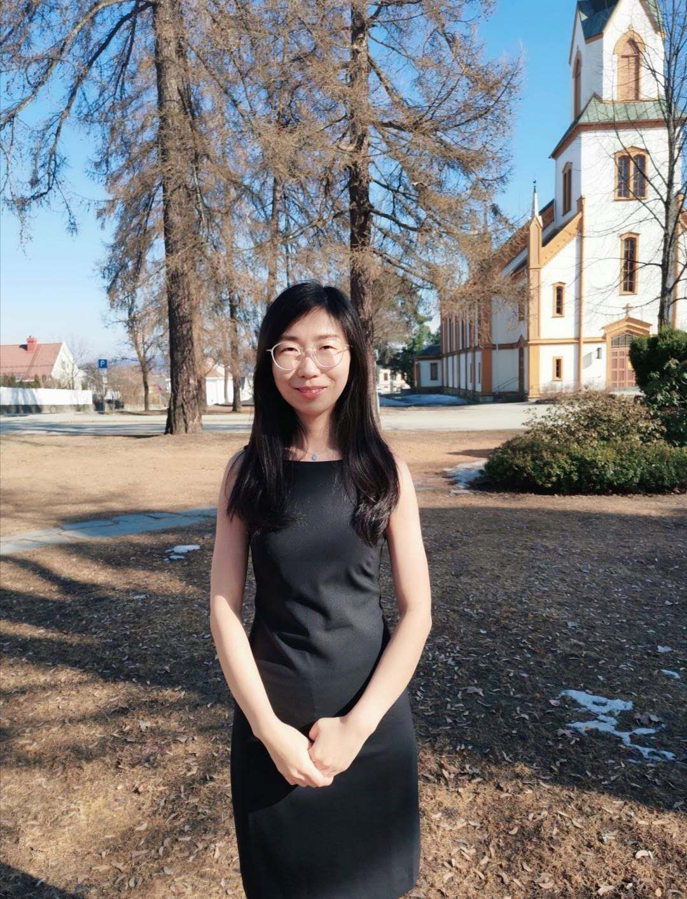

Congcong WangPhD of Computer Vision and (Medical) Image Processing C3-52, Building 1, Email: congconog.wang6@outlook.com
|

|
Short BioOn 27th March 2020, I defended my PhD thesis (online) at the Department of Computer Science, Norwegian University of Science and Technology, supervised by Prof. F. A. Cheikh, Prof. O. J. Elle and Prof. A. Beghdadi. Before that, I received a Bachelor degree in electronic engineering from Shandong University (Jinan, China) in 2011 and a master degree in " Erasmus Mundus master programme of media technology from CIMET (Colour in Informatics and Media Technology) in 2014. Before joining the Norwegian Colour and Visual Computing Laboratory at NTNU in 2016, I worked in the R&D institude of Ericsson China as a telecommunication engineer. |
||
Publications Linking convolutional neural networks with graph convolutional networks: application in pulmonary artery-vein separation. Automatic quantitative analysis of pulmonary vascular morphology in CT images. Registration of vascular structures using a hybrid mixture model. Pulmonary Vascular Morphology Associated With Gas Exchange in Systemic Sclerosis Without Lung Fibrosis. Treatment effect of balloon pulmonary angioplasty in chronic thromboembolic pulmonary hypertension quantified by automatic comparative imaging in computed tomography pulmonary angiography. Pulmonary vessel tree matching for quantifying changes in vascular morphology. Lung vessel segmentation in CT images using graph-cuts. |
||
Talks & PostersTalk on "Linking convolutional neural networks with graph convolutional networks: application in pulmonary artery-vein separation" Talk on "Treatment Effect of Balloon Pulmonary Angioplasty in CTEPH, Quantified by Automatic Comparative Imaging in CTPA" Poster on "Pulmonary vessel tree matching for quantifying changes in vascular morphology" Poster on "Lung vessel segmentation in CT images using graph-cuts" |
||
AwardsScholarship of Medical Image Computing Summer School (MedICSS) at UCL, 2017. PhD Scholarship of China Scholarship Council (CSC), Sep. 2014 -- Sep. 2018 Art is long, life is short. |
||
MiscellanyI like tennis, skating, cooking, reading, travelling. Art is long, life is short. |
||
|
Last updated date: Apr 2019. Click the map to see page view statistics since Jan 2016. |